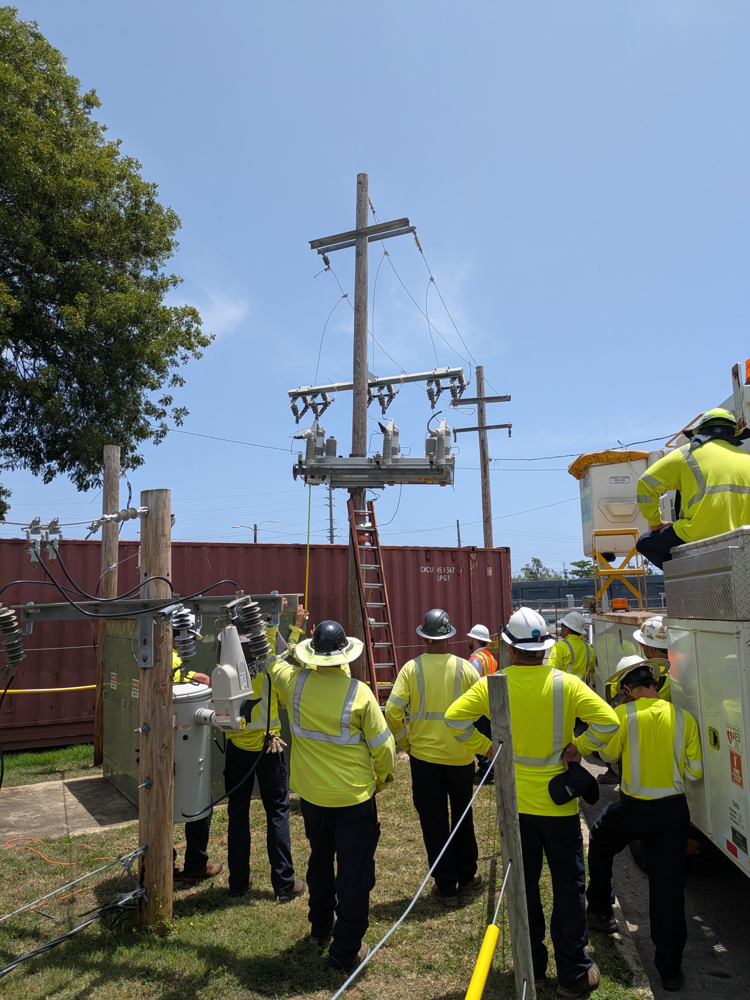

Technical Specialist II
- Serve as a member of the reliability and protection engineering team responsible for defining protection strategies and reliability-driven recommendations for Puerto Rico's distribution system.
- Act as technical lead for the cFCI deployment program, defining methodologies, device model selection criteria, and deployment strategies for an island-wide rollout of devices.
- Complete protection coordination studies using Synergi Electric and Excel-based TCC tools, ensuring device coordination and compliance with protection standards.